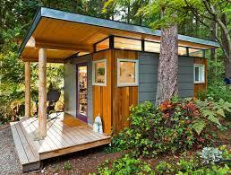

Caracter
En esta pagina se habla sobre la corriente del minimalismo, donde surgió, las mnicasas y el minimalismo arquitectonico más destacado.

En esta pagina se habla sobre la corriente del minimalismo, donde surgió, las mnicasas y el minimalismo arquitectonico más destacado.
El minimalismo es un movimiento que nació en Alemania hacia el año 1930 por el arquitecto Ludwig Mies Van Der Rohe. El movimiento busca la esencia con lo más mínimo, por eso deja de lado los elementos innecesarios y el estilo recargado de las anteriores épocas artísticas.
La arquitectura minimalista nació a finales de los años 60 con un mayor crecimiento del movimiento hacia los años 70.

Las mini casas con ruedas o “tiny house” fue un movimiento que nació en EEUU a finales de los 90, a raíz de la aparición de el minimalismo arquitectónico. Este tipo de viviendas ronda los 16-50 metros cuadrados, que trata de aprovechar al máximo el espacio.
Los mejores edificios de estilo minimalista, de todas las épocas, ya que todos tienen muchos conceptos estéticos en común. Cada uno tiene un toque difernete pero sin salirse del concepto minimalista.